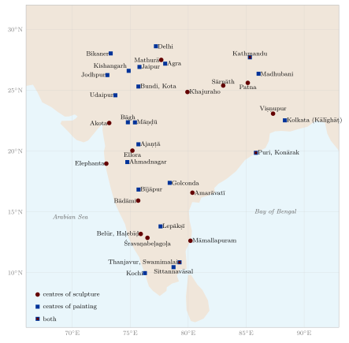
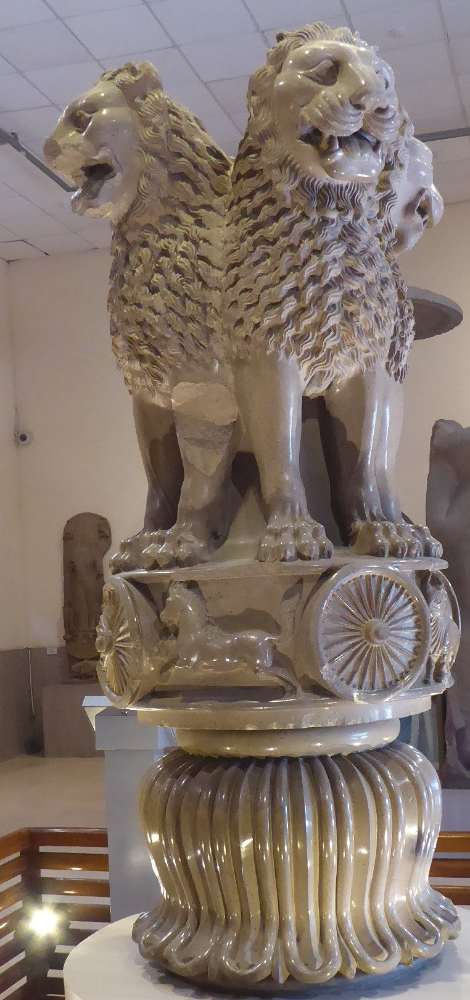
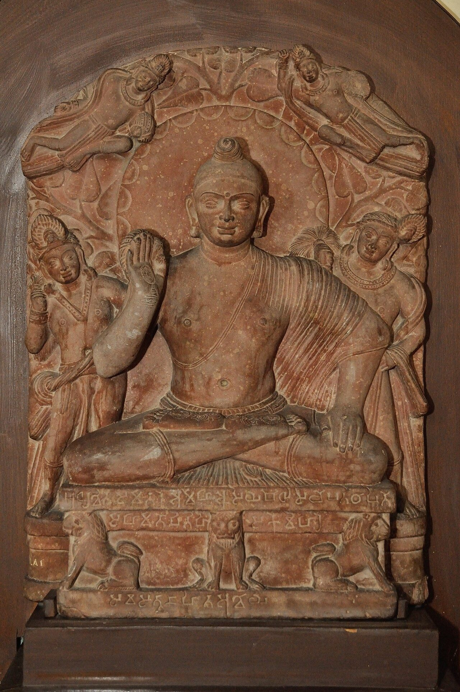
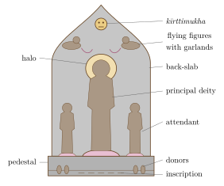
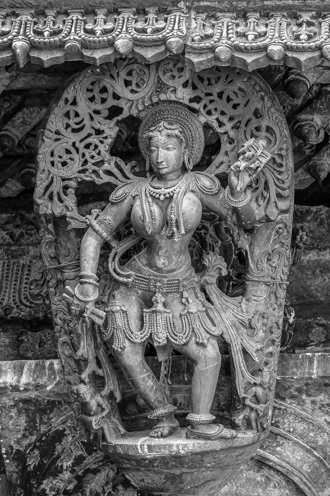

Chapter 13: Schools of Indian Sculpture¶
13.1 Introduction¶
Art historians group Indian sculpture into “schools”, named after dynasties (Maurya, Kuṣāṇa, Gupta, Chola, Pāla, Hoysaḷa) or after regions and sites (Mathurā, Gandhāra, Amarāvatī). These labels are conveniences. Sculptors worked for patrons of every religion, moved between courts, and drew on neighbouring traditions; a dynastic name does not mean that the king paid for the sculpture, and the boundaries between “schools” are often blurred. With these cautions, this chapter follows the main traditions in rough chronological order (Harle 1994; Huntington 1985; Dehejia 1997; Mitter 2001). The principal centres of sculpture, and those of painting discussed in the next chapter, are shown in Figure 13.1.

13.2 The Beginnings¶
13.2.1 Harappan Sculpture¶
The Harappan cities produced small sculptures in stone, bronze and terracotta: the steatite bust of a bearded man from Mohenjo-daro (often called the “priest-king”, a modern label), the small bronze figure of a young woman known as the “dancing girl”, the red sandstone male torso from Harappā, and thousands of terracotta figurines, together with the carved steatite seals with their animals and script (Kenoyer 1998).
13.2.2 Mauryan Sculpture¶
Monumental stone sculpture appears under the Mauryas. The polished sandstone columns set up by Aśoka carried capitals with animals: the lion capital from Sārnāth, with four lions back to back above a frieze of animals and wheels (Figure 13.2, left), which became the emblem of the Republic of India; the bull from Rāmpurvā; and the single lions of Lauriyā Nandangaṛh and Vaiśālī. The origins of this polished, monumental style, with its Achaemenid Persian echoes, are much debated. Large stone figures of yakṣas and yakṣīs, such as the Parkham yakṣa near Mathurā and the polished yakṣī found at Didarganj near Patna (Figure 13.2, right), belong to the Mauryan or immediately post-Mauryan period; the date of the Didarganj figure in particular is disputed.


13.2.3 Bhārhut and Sāñcī¶
The railings and gateways of the stūpas of Bhārhut (2nd century BCE) and Sāñcī (2nd century BCE to 1st century CE) carry the first great programmes of narrative relief in Indian art: scenes from the life of the Buddha and the jātakas, worshippers, animals, yakṣas and yakṣīs, and lotus and creeper ornament (Chapter 3). The yakṣī brackets of the Sāñcī gateways, embracing trees, are among the earliest images of the celestial woman that runs through all later Indian sculpture.
13.3 Mathurā¶
Mathurā, on the Yamunā, was a major centre of sculpture from the 2nd century BCE to the 5th century CE and later, producing images for Buddhists, Jains and Hindus alike in a distinctive spotted red sandstone (Quintanilla 2007). Under the Kuṣāṇa rulers (1st–3rd century CE) Mathurā’s workshops produced:
-
some of the earliest Buddha and bodhisattva images: robust, broad-shouldered figures with smooth heads crowned by a coiled protuberance, a large scalloped halo, and a thin robe leaving the right shoulder bare, such as the seated Buddha from Katrā (Figure 13.3, left);
-
Jain images of tīrthaṅkaras and inscribed votive tablets (āyāgapaṭa) from the Kaṅkālī Ṭīlā stūpa site;
-
early images of Hindu deities, including Viṣṇu, Śiva (as liṅgas with faces), Durgā killing the buffalo, the Seven Mothers, Sūrya and others;
-
portrait statues of Kuṣāṇa rulers, among them the headless standing figure of Kaniṣka, inscribed with his name, from the dynastic shrine at Māṭ.
Many Mathurā images carry inscriptions naming their donors, often monks, nuns, merchants and women of the city, which make Mathurā one of the best-documented early schools.
13.4 Gandhāra¶
Gandhāra, the region around Peshawar in north-western Pakistan, and neighbouring areas of Afghanistan produced a large body of Buddhist sculpture between about the 1st and the 5th centuries CE, in grey schist and later in stucco (Zwalf 1996; Rosenfield 1967). Its style draws on the art of the Hellenistic and Roman world: the Buddha is shown with wavy hair gathered in a topknot, a classicising face and a heavy, deeply folded robe covering both shoulders (Figure 13.3, right); reliefs from stūpas narrate his life in a series of panels, with figures and motifs borrowed from Roman art. Bodhisattvas are shown as richly dressed princes. This was not a “Greek” art in India but a Buddhist art of the borderlands, produced by local workshops for local patrons in a region where several cultures met (Table 13.1).
| Feature | Mathurā | Gandhāra |
|---|---|---|
| Material | Spotted red sandstone | Grey schist; later stucco |
| Head | Smooth head with coiled protuberance; round face | Wavy hair in a topknot; classicising face |
| Robe | Thin, clinging; right shoulder often bare | Heavy, with deep folds; usually both shoulders covered |
| Body | Broad-shouldered and powerful | More slender |
| Halo | Large, with scalloped edge | Plain |


13.5 Amarāvatī and Nāgārjunakoṇḍa¶
In the lower Kṛṣṇā valley in Andhra, Buddhist stūpas were decorated from the 2nd century BCE to the 4th century CE with reliefs carved in a fine greenish-white limestone (Huntington 1985). At Amarāvatī, under the Sātavāhanas, and at Nāgārjunakoṇḍa, under the Ikṣvākus in the 3rd century CE, the sculptors developed a style of slender, animated figures in crowded, dynamic compositions, often arranged in roundels, with great skill in depicting movement and depth. Other sites include Jaggayyapeṭa, Goli and Ghaṇṭaśālā. Buddha images of the Andhra type travelled to Sri Lanka and Southeast Asia, where they influenced early Buddhist sculpture.
13.6 The Gupta Period¶
The sculpture of the Gupta period (c. 320–550 CE) and of contemporary dynasties such as the Vākāṭakas has long been regarded as “classical” in Indian art (Williams 1982). Its images combine a smooth, softly modelled body with a calm, inward expression. At Mathurā, the Buddha’s robe falls in regular, string-like folds; at Sārnāth, carved in buff Chunār sandstone, the robe is rendered as a transparent film, visible only at its edges, over a body of idealised smoothness. The seated Buddha preaching the first sermon, in Sārnāth, is the best-known example.
Hindu sculpture of the period includes the great Varāha relief at Udayagiri (Chapter 3), the panels of Viṣṇu reclining on the serpent, of Nara and Nārāyaṇa, and of Gajendramokṣa at the Daśāvatāra temple at Deogaṛh, mukhaliṅgas, and terracotta panels from brick temples. A copper Buddha over two metres high from Sultanganj in Bihar, now in Birmingham, shows the scale of metal casting in the 6th or 7th century.
At Eraṇ in Madhya Pradesh, a colossal free-standing image of Viṣṇu as a boar, its body covered with rows of small figures of sages and gods, bears an inscription of the first year of the Hūṇa ruler Toramāṇa (late 5th or early 6th century), recording its dedication by a local ruler; nearby stands a tall pillar set up in 484–85 under the Gupta king Budhagupta. The site shows the continuity of Vaiṣṇava patronage across a period of political upheaval.
13.7 Western India and the Deccan, 6th to 10th Centuries¶
The caves of Elephanta and Ellora and the temples of the early Cālukyas at Aihoḷe, Bādāmi and Paṭṭadakal contain some of the most powerful sculpture in India (Chapters 5 and 3): the Maheśamūrti and the great panels of Elephanta; the dancing Śiva, Durgā and Varāha of Bādāmi; and, at Ellora, Rāvaṇa shaking Mount Kailāsa. These works are characterised by large, dramatically lit compositions, cut deep into the rock.
Under the Rāṣṭrakūṭas (8th–10th century), the sculptors of the Kailāsa at Ellora carved monumental panels on the walls of the court and the base of the temple: Śiva in many forms, the river goddesses at the entrance to the shrine of the three rivers, the epic battles of the Rāmāyaṇa and Mahābhārata along the base, and the great elephants and lions that seem to carry the temple on their backs. The Jain caves at Ellora continue the style in a more ornate manner. In the early Cālukya temples at Paṭṭadakal, by contrast, the sculpture is set in niches and panels on the walls in a manner close to that of the Pallavas, and narrative friezes run along the bases and pillars, illustrating the epics and the Pañcatantra.
13.8 The Pallavas and the Cholas¶
13.8.1 Pallava Sculpture¶
The Pallava monuments of Māmallapuram and Kāñcīpuram (7th–8th century) established the southern sculptural idiom: slender, elegant figures with long limbs and small, oval faces, as in the relief of the Descent of the Gaṅgā (or Arjuna’s Penance), the Mahiṣāsuramardinī cave and the Somāskanda panels in the shrines of the caves and of the Shore Temple (Chapter 3, Section 3.11, and Chapter 5, Section 5.6.3).
13.8.2 Chola Stone Sculpture¶
The early Chola temples of the 9th and 10th centuries, many of them small village shrines, carry niche images of great refinement, such as the Dakṣiṇāmūrti, Brahmā and Durgā of the temples at Puḷḷamaṅgai and Kumbakonam (Nāgeśvara). The great royal temples of Thanjavur, Gaṅgaikoṇḍacōḻapuram and Dārāsuram added monumental guardian figures, narrative friezes and the dance poses of the upper storey at Thanjavur (Dehejia 1990).
13.8.3 Chola Bronzes¶
The bronze images made in the Chola country between the 10th and 13th centuries are among the masterpieces of world sculpture. Most were processional images (utsavamūrti), cast solid by the lost-wax process (Chapter 11) and fitted with lugs on their pedestals so that they could be carried on poles; in worship they are dressed, garlanded and decorated with jewels, so that the bronzes now in museums are seen as they were not seen in their temples. They include Śiva as Naṭarāja and in many other forms, Pārvatī, the Somāskanda group, Viṣṇu with Śrīdevī and Bhūdevī, Rāma with Sītā and Lakṣmaṇa, Kṛṣṇa, Kālī, and the Śaiva and Vaiṣṇava poet-saints (Nāyaṉmār and Āḻvār) (Dehejia 2002). Some of the finest early bronzes were commissioned by Sembiyaṉ Mahādevī, a Chola queen of the 10th century, who was also a great builder of temples. Vidya Dehejia has used the inscriptions that record such gifts, and the bronzes themselves, to reconstruct the “material life” of these images: who paid for them, how they were adorned and used in festivals, and how their makers were rewarded (Dehejia 2021). The Naṭarāja image is discussed in Chapter 12.
13.9 Eastern India: The Pālas and Senas¶
Under the Pāla (c. 750–1160) and Sena dynasties of Bihar and Bengal, sculptors produced Buddhist and Hindu images in a fine-grained, dark grey to black stone and in bronze (Huntington and Huntington 1990). Typical stone images are steles: the principal figure stands or sits before a pointed back-slab carved with attendants, flying figures and ornament, and the surfaces are crisp and finely detailed (Figure 13.4).

The great monasteries of Nālandā and Vikramaśilā and the shrine at Bodh Gayā were major centres; the hoards of bronzes found at Nālandā and at Kurkihār show the importance of portable metal images. Through pilgrims and monks, the Pāla style had a deep influence on the Buddhist art of Nepal and Tibet, and also reached Myanmar and Southeast Asia.
13.10 Central and Western India, 10th to 13th Centuries¶
The temples of Khajuraho and other Candella sites, of the Paramāras of Mālwā, of the Kalacuris and of the Caulukyas of Gujarat carry very large programmes of sculpture in which deities, celestial women, couples and mythical beasts are carved in high relief and arranged in registers on the walls (Chapter 5) (Desai 1996). At Khajuraho the walls of the larger temples carry several hundred figures each, arranged in two or three registers between the projecting balconies: deities in the principal niches; the guardians of the directions at the corners; celestial women, shown adorning themselves, writing letters, removing thorns or playing with children and animals; rearing vyālas in the recesses; and couples. The figures are tall and slender, with sharply cut features and elaborate ornament, and their poses are animated by twisting and bending. Similar sculpture adorned the temples of the Kacchapaghātas at Gwalior and Suhania and of the Kalacuris of central India, and the Paramāra temples of Mālwā, such as the Udayeśvara at Udayapur. In western India, Jain patrons commissioned marble temples and images in great numbers; the carving of ceilings and pillars at Dilwārā and Raṇakpur is among the most intricate in Indian art.
13.11 Odisha¶
The temples of Bhubaneswar, Puri and Konārak preserve a continuous sequence of sculpture from the 7th to the 13th century (Donaldson 1985). Among its high points are the Mukteśvara temple (10th century), with its arched gateway (toraṇa) and finely carved small panels; the Rājarāṇī temple (11th century), famous for its graceful female figures and guardians of the directions; and Konārak (13th century), where the platform, wheels and walls carry thousands of sculptures, from monumental horses and elephants to courtly scenes, musicians, dancers and couples, and green chlorite images of Sūrya.
13.12 Karnataka before the Hoysaḷas¶
Between the early Cālukyas and the Hoysaḷas, several dynasties of Karnataka and its borders patronised fine sculpture. The Western Gaṅgas, rulers of southern Karnataka from the 4th to the 10th century, were great patrons of Jainism, and their minister Cāmuṇḍarāya commissioned the Bāhubali at Śravaṇabeḷagoḷa (below). The Nolambas, a dynasty of the border region between Karnataka and Andhra in the 9th and 10th centuries, are known for their exquisitely carved black stone pillars, ceilings and images, as at Hemāvatī. The Rāṣṭrakūṭas, whose capital was at Mānyakheṭa, patronised both Hindu and Jain art, and their sculpture at Ellora is discussed above.
13.13 Karnataka: The Later Cālukyas and Hoysaḷas¶
The Hoysaḷa temples of Karnataka (12th–13th century) are built and carved of chloritic schist, a stone that can be worked in great detail (Hardy 1995). Their outer walls are wrapped in horizontal friezes (Figure 13.5, right): elephants, horsemen, scrolls, mythical beasts and narratives from the epics and Purāṇas, above which stand large images of deities under elaborate canopies. Inside, lathe-turned pillars support bracket figures of celestial women (madanikā; Figure 13.5, left), dancing, adorning themselves or playing instruments. The Cennakeśava at Belūr (begun 1117), the Hoysaḷeśvara at Haḷebīḍ (begun about 1121) and the Keśava at Somanāthapura (1268) are the best known. Many Hoysaḷa sculptures are signed by their makers. The later Cālukya temples of the 11th and 12th centuries, such as those at Lakkuṇḍi and Itagi, are carved with similar finesse.


13.14 Kashmir and the Himalaya¶
Kashmir produced stone and metal sculpture from the 6th to the 12th century, much of it in brass inlaid with silver and copper, for Buddhist and Hindu patrons. Its style, with full, rounded bodies and crisply detailed ornament, drew on Gandhāran and Gupta traditions, and influenced the art of the western Himalaya and Tibet. In Himachal Pradesh, metal images and carved wooden temples survive at sites such as Chamba and Brahmaur. Nepal, especially the Kathmandu valley, has a continuous tradition of metal casting and stone sculpture from the Licchavi period (5th–9th century) to the present (on its temples see Chapter 5, Section 5.7.6).
13.15 Jain Metal Images¶
Jain communities commissioned metal images from an early date. A hoard of bronzes found at Chausa in Bihar includes some of the earliest known Jain metal images, of the early centuries CE. At Akota near Vadodara in Gujarat, a large hoard of Jain bronzes of the 6th to 11th centuries was found in the 1950s, among them standing tīrthaṅkaras, the goddess Ambikā, and images inscribed with the names of monks and lay donors. Metal images, often inlaid with silver and copper and inscribed with the names of donors and dates, continued to be made in great numbers in western India and Karnataka, and many are still worshipped in household and temple shrines.
13.16 Jain Colossi¶
The most famous colossal image in India is the monolithic statue of Bāhubali (Gommaṭeśvara) at Śravaṇabeḷagoḷa in Karnataka, carved from the granite of a hilltop in about 981–983 for Cāmuṇḍarāya, a minister of the Gaṅga kings, and about seventeen metres (57 feet) high. It is the focus of the great mahāmastakābhiṣeka ceremony, in which the image is bathed from above, held about every twelve years. Similar colossi were carved later at Kārkaḷa (1432) and Veṇūr (1604) in coastal Karnataka. In the 15th century, colossal Jinas were carved into the rock faces of Gwalior fort.
13.17 Later Traditions¶
13.17.1 Vijayanagara and Nāyaka¶
The temples of Vijayanagara and the Nāyaka kingdoms (14th–18th century) are covered with carving: pillars sculpted as rearing horses and composite beasts (yāḷi), portrait figures of rulers and donors, narrative friezes, and great numbers of painted stucco figures on the gopuras. The life-size portrait sculptures of Kṛṣṇadevarāya and his queens at Tirupati, in bronze, and of the Nāyaka rulers in the halls of Madurai and elsewhere, in stone, show a developed tradition of royal portraiture.
13.17.2 Bengal Terracotta¶
In Bengal, where stone is scarce, the brick temples built from the 16th to the 19th century are covered with terracotta plaques showing scenes from the Rāmāyaṇa and Mahābhārata, the life of Kṛṣṇa, the incarnations of Viṣṇu, and contemporary life, including European ships and soldiers. The temples of Viṣṇupur, built by the Malla kings, such as the Śyām Rāy (1643), the Jor Bāṅglā (1655) and the Madan Mohan (1694), and the Kāntajī temple at Kantanagar (completed 1752, now in Bangladesh) are the best known (Table 13.2; on the architecture see Chapter 5, Section 5.7.4) (Ghosh 2005).
| Temple | Place | Date |
|---|---|---|
| Śyām Rāy | Viṣṇupur | 1643 |
| Jor Bāṅglā (Keṣṭa Rāy) | Viṣṇupur | 1655 |
| Madan Mohan | Viṣṇupur | 1694 |
| Ananta Vāsudeva | Bansberia | 1679 |
| Kāntajī | Kantanagar, Dinajpur | completed 1752 |
13.17.3 Sculpture in Indo-Islamic Architecture¶
Islamic religious architecture avoids images of living beings, and sculpture in the Sultanate and Mughal periods took the form of carved ornament: calligraphy, arabesques and geometric patterns, pierced stone screens (jālī), relief carving of flowering plants, and inlay of coloured stones. The workmanship of the screens of the Sīdī Saiyyid mosque in Ahmadābād, of Salīm Chishtī’s tomb at Fatehpur Sīkrī and of the Tāj Mahal ranks with the finest carving in India (Chapter 6). Figural sculpture was not entirely absent from secular buildings, as the stone elephants once placed at the gates of the Agra and Delhi forts show.
13.17.4 Modern Sculpture¶
In the 20th century, sculptors trained in art schools developed modern Indian sculpture. Ramkinkar Baij (1906–1980) at Santiniketan made monumental outdoor works in cement and laterite; D. P. Roy Chowdhury, Sankho Chaudhuri, Meera Mukherjee (who learned from the ḍhokrā metal-casters of Bastar) and many others explored modern forms while drawing in different ways on Indian traditions. Alongside them the traditional workshops described in Chapter 11 continue to produce images for worship.
13.18 Sculpture and Dance¶
Indian sculpture is closely related to dance. Many sculptures of deities, celestial women and musicians adopt the stances, gestures and bends of the body described in the Nāṭyaśāstra, and some temples carry systematic series of dance poses, such as the karaṇas carved at Thanjavur and on the gateways of Chidambaram (Chapter 5). The Viṣṇudharmottara makes the understanding of image-making depend on that of dance (Chapter 14, Section 14.3). In the 20th century, dancers and scholars reconstructing classical dance forms such as Bharatanāṭyam and Odissi used temple sculpture as one of their sources, studying the poses carved at Chidambaram, Thanjavur and Konārak; this use of sculpture to recover dance has itself become part of the modern history of both arts.
13.19 Patrons and Makers¶
Inscriptions on sculptures and buildings show who paid for them, and they reveal a wider range of patrons than the dynastic labels suggest. At Sāñcī and Bhārhut, hundreds of donors, many of them women, monks and nuns, paid for individual railing posts and crossbars. At Mathurā, Kuṣāṇa-period Buddhist and Jain images were dedicated by monks, nuns, merchants, goldsmiths and women of the city. Royal women were among the great patrons: the Cālukya queens Lokamahādevī and Trailokyamahādevī at Paṭṭadakal, the Chola queen Sembiyaṉ Mahādevī, who rebuilt many temples in stone and commissioned bronzes, the Caulukya queen to whom the Rāṇī kī Vāv is attributed, and the Mughal and Rajput women who built mosques, tombs, stepwells and gardens. Merchant and ministerial families paid for the Jain temples of western India. The sculptors themselves are often anonymous, but at some sites, especially in Karnataka, they signed their work, and inscriptions sometimes record their titles and rewards (Chapter 11).
13.20 The North-east¶
The sculpture of ancient Kāmarūpa (Assam) is less well known than that of other regions but of considerable interest. A carved stone doorframe at Da-Parbatiya near Tezpur, with river goddesses at its base, shows the reach of the Gupta-period style in the 5th or 6th century; the ruined temple complex of Madan Kāmdev (10th–12th century) has lively carvings of deities, couples and musicians; and the sculpture of the Pāla style spread into the region. Later, under the Ahom kings, temples at Sivasāgar carried bands of brick and stone carving, and the satras (Vaiṣṇava monasteries) founded in the tradition of Śaṅkaradeva developed their own arts of masks, painted manuscripts and wooden carving.
13.21 Material and Style¶
The materials available to each school shaped its style. Mathurā’s sandstone favoured broad, rounded forms; Gandhāra’s schist took crisp, deep folds; the fine sandstone of Sārnāth allowed smooth, unbroken surfaces; the dark stone of eastern India, polished to a sheen, encouraged precise linear detail; the chloritic schist of Karnataka permitted extraordinary intricacy; granite in Tamil Nadu demanded simplified forms in stone, while the lost-wax process freed Chola bronze-casters to create open, dynamic compositions. Material alone does not explain style, which also depended on patronage, religious function and the inventiveness of individual workshops; but the relation between the two is one of the threads that run through the history of Indian sculpture (Table 13.3).
| Tradition | Period | Principal material | Religions |
|---|---|---|---|
| Maurya | 3rd c. BCE | Polished sandstone | Buddhist (Aśokan), others |
| Mathurā | 2nd c. BCE–5th c. CE | Red sandstone | Buddhist, Jain, Hindu |
| Gandhāra | 1st–5th c. CE | Grey schist, stucco | Buddhist |
| Amarāvatī, Nāgārjunakoṇḍa | 2nd c. BCE–4th c. CE | Limestone | Buddhist |
| Gupta | 4th–6th c. | Sandstone, terracotta, metal | Hindu, Buddhist, Jain |
| Pallava and Chola | 7th–13th c. | Granite, bronze | Hindu, Jain |
| Pāla and Sena | 8th–12th c. | Dark stone, bronze | Buddhist, Hindu |
| Hoysaḷa | 12th–13th c. | Chloritic schist | Hindu, Jain |
| Bengal temples | 16th–19th c. | Terracotta | Hindu |
Further Reading¶
-
Harle, J. C. 1994. The Art and Architecture of the Indian Subcontinent. 2nd ed. Yale University Press.
-
Rosenfield, John M. 1967. The Dynastic Arts of the Kushans. University of California Press.
-
Williams, Joanna Gottfried. 1982. The Art of Gupta India: Empire and Province. Princeton University Press.
-
Dehejia, Vidya. 2002. The Sensuous and the Sacred: Chola Bronzes from South India. American Federation of Arts and University of Washington Press.
-
Huntington, Susan L., and John C. Huntington. 1990. Leaves from the Bodhi Tree: The Art of Pāla India (8th–12th Centuries) and Its International Legacy. Dayton Art Institute and University of Washington Press.
-
Zwalf, W. 1996. A Catalogue of the Gandhāra Sculpture in the British Museum. 2 vols. British Museum Press.
-
Quintanilla, Sonya Rhie. 2007. History of Early Stone Sculpture at Mathura, Ca. 150 BCE–100 CE. Brill.
-
Dehejia, Vidya. 1997. Indian Art. Phaidon.